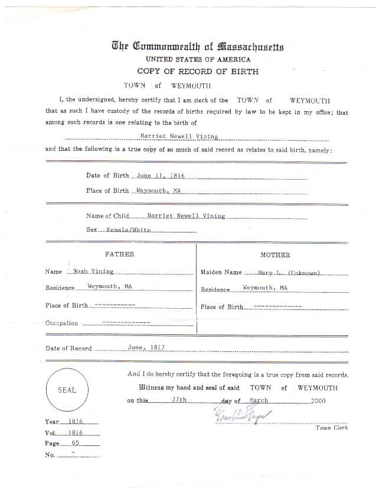
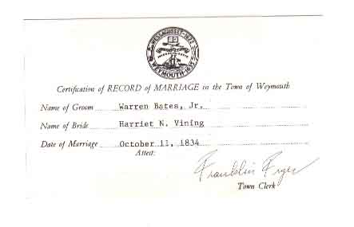
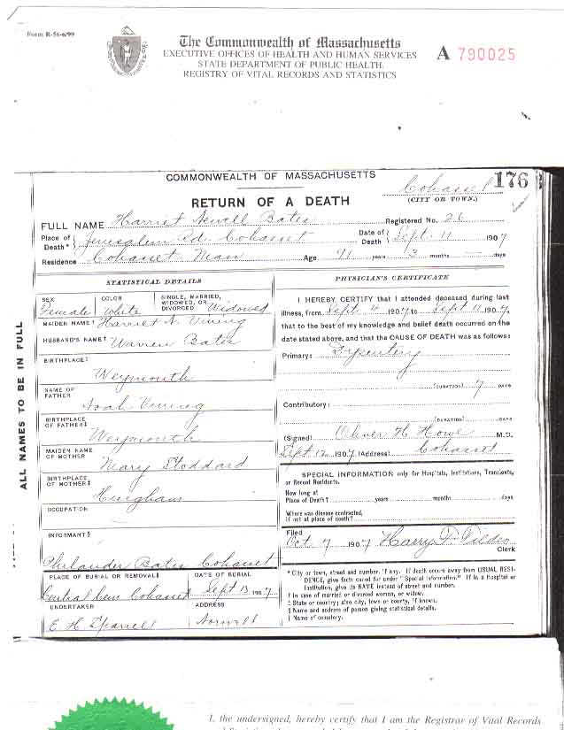

Census Data
| 1810 | 1820 | 1830 | 1840 | 1850 | 1860 | 1870 | |
| Noah Vining | M 26–44 | M 26–44 | M 40–49 | ? | 68 | 79 | dead |
| Mary Leavitt (Stoddard) Vining | F 26–44 | F 26–44 | F 40–49 | ? | 66 | 77 | dead |
| Noah Vining Jr. | M under 10 | M 10–15 | M 20–29 | married [and living in separate household?] | |||
| Allen Vining | M under 10 | M 10–15 | M 20–29 | married [and living in separate household?] | |||
| Mary Vining | F under 10 | F 10–15 | married, [living in this household?] | ? | |||
| Samuel Albert Vining | M under 10 | M 15–19 | ? | [living? in separate household] | |||
| Adoniram Vining | M under 10 | M 15–19 | married [and living separate household?] | ||||
| Harriet Newell Vining | F under 10 | F 10–14 | married [and living in separate household?] | ||||
| Catharine M. Vining | F under 10 | F 10–14 | ? | married and living in separate household |


Birth Data
Birth certificate for Harriet Newell Vining, daughter of Noah Vining and Mary Leavitt Stoddard:
Marriage Data
Marriage certificate for Harriet Newell Vining, daughter of Noah Vining and Mary Leavitt Stoddard:
Death Data
Death certificates for Harriet Newell Vining, daughter of Noah Vining and Mary Leavitt Stoddard: